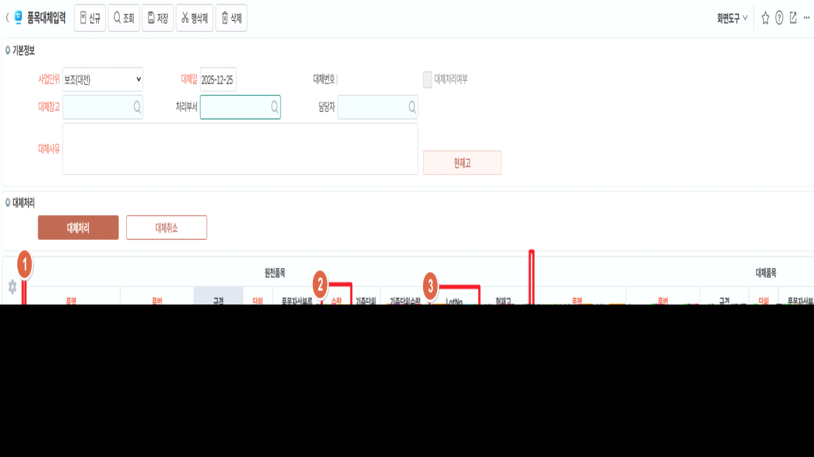

(신규) (화면) 품목대체입력
1. Serial여부 컬럼 추가
- 컬럼 사이즈: 30, 체크 시 배경 색 표기 '#FFF9C4'
- Serial대상: 품명이 시리얼 지정 품목인 경우 체크됩니다.
2. 수량정보
- Serial여부에 체크된 경우 DIS; 수량1 값 반영
- 원천품목, 대체품목 모두 동일
3. LotNo
- HID;, 원천품목, 대체품목 모두 동일
4. SerialNO
- 필수 (미입력 시 저장 오류)
- 원천품목: 코드도움
- [대체처리]버튼 클릭 시 기존 Serial이 출고처리되어 Serial이 더이상 출고등의 화면에서 사용되지 않도록 통제 필요
- _TLGInOutSerialSub,svs_TLGInOutSerialSub 에 값 저장
- 대체품목: 텍스트
- [대체처리]버튼 클릭 시 신규 Serial이 생성. SerialNO+품목 코드로만 생성 (기존 시리얼과 중복 체크만 확인)
- Serial 상세 정보에 대한 수정은 별도 Serial정보 수정 화면에서 작업하도록 안내예정
- _TLGSerialMaster, _TLGInOutSerialSub,svs_TLGInOutSerialSub 에 값 저장
- 대체처리로 별도 작업되므로 Dummy1, Dummy7 (기존 Serial). Dummy2 (신규 Serial) 활용

출처: \<https://call.sysware.co.kr/Page/Open/99366/100101/0/18820244>